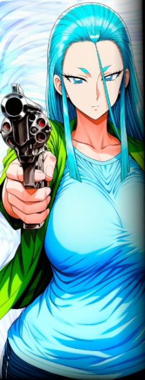

▼ＹＤＦ【 ＬＵＮＡ隊 】＜＜目次へ戻る
◆【 ＹＤＦ 】
中層のＹＤＦ部隊。
……が、その実態はモヒカンと五十歩百歩な無法者の群れ。
一番問題なのは、彼らの蛮行・奇行のほとんどは悪気がないということである。
なお、隊の名前については何らかの略称と言われているがはっきりしない。 |
|
 |
右藤 イータ
|
||||||||||||||||
|
【ＬＵＮＡ隊】の隊長。一児の母親でバツイチ。
クールで無表情、堂々とした立ち振舞いからはかけ離れ、実務能力は皆無……というかほぼ白痴。
撃った相手が死ななくなる異能【本当に全く以て役に立たない銃】を有する。
無能かつ専横も激しい彼女がその地位を追われない理由には、まことしやかな「噂」がある。
「よろしく頼む。」 |
|||||||||||||||||
| ＜＜目次へ戻る | |||||||||||||||||